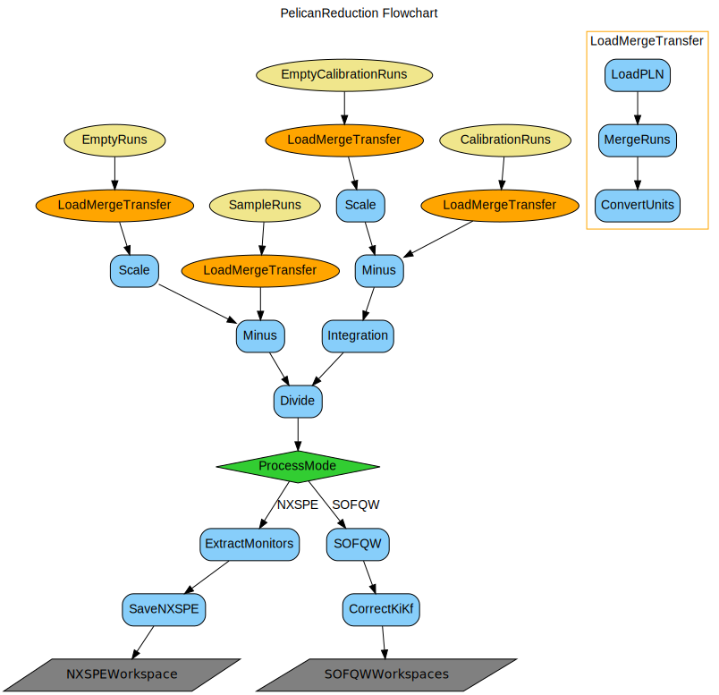

\(\renewcommand\AA{\unicode{x212B}}\)
PelicanReduction v1¶
{kind=link}
PelicanReduction dialog.¶
Summary¶
Performs an inelastic energy transfer reduction for ANSTO Pelican geometry data.
Properties¶
Name |
Direction |
Type |
Default |
Description |
|---|---|---|---|---|
SampleRuns |
Input |
str list |
Mandatory |
Optional cycle number followed by comma separated range of sample runs as [cycle::] n1,n2,.. eg 123::7333-7341,7345 |
EmptyRuns |
Input |
string |
Optional cycle number followed by comma separated range of runs as [cycle::] n1,n2,.. eg 123::6300-6308 |
|
ScaleEmptyRuns |
Input |
number |
1 |
Scale the empty runs prior to subtraction |
CalibrationRuns |
Input |
string |
Optional cycle number followed by comma separated range of runs as [cycle::] n1,n2,.. eg 123::6350-6365 |
|
EmptyCalibrationRuns |
Input |
string |
Optional cycle number followed by comma separated range of runs as [cycle::] n1,n2,.. eg 123::6370-6375 |
|
EnergyTransfer |
Input |
string |
0.0, 0.02, 3.0 |
Energy transfer range in meV expressed as min, step, max |
MomentumTransfer |
Input |
string |
Momentum transfer range in inverse Angstroms, expressed as min, step, max Default estimates the max range based on energy transfer. |
|
Processing |
Input |
string |
SOFQW1-Centre |
Convert to SOFQW or save file as NXSPE, note SOFQW3 is more accurate but much slower than SOFQW1. Allowed values: [‘SOFQW1-Centre’, ‘SOFQW3-NormalisedPolygon’, ‘NXSPE’] |
LambdaOnTwoMode |
Input |
boolean |
False |
Set if instrument running in lambda on two mode. |
FrameOverlap |
Input |
boolean |
False |
Set if the energy transfer extends over a frame. |
CalibrateTOF |
Input |
boolean |
False |
Determine the TOF correction from the elastic peak in the data. |
TOFCorrection |
Input |
string |
The TOF correction in usec that aligns the elastic peak. |
|
AnalyseTubes |
Input |
string |
Detector tubes to be used in the data analysis. |
|
MaxEnergyGain |
Input |
string |
Energy gain in meV used to adjust the min TOF with frame overlap. |
|
OutputWorkspace |
Output |
Mandatory |
Name for the reduced workspace. |
|
ScratchFolder |
Input |
string |
Path to save and restore merged workspaces. |
|
KeepIntermediateWorkspaces |
Input |
boolean |
False |
Whether to keep the intermediate sample and calibration workspaces for diagnostic checks. |
ConfigurationFile |
Input |
string |
Optional: INI file to override default processing values. Allowed values: [‘ini’] |
Description¶
Reduces the data from the Pelican instrument from time of flight versus two theta to S(Q,w). Data can be corrected for background with an empty can subtraction and normalised to vanadium (both optional). Output can be for a powder S(Q,w) or for a single crystal S(Q,w) in the latter case an nxspe file is written. Data can be processed for the specified region of Q and w space. Data can also be processed for the lamda/2 option for Pelican. As a default the output for a powder also includes the Q integrated data S(ω) and the energy integrated data S(Q).
The portion of the detector that is used is defined in the config file. A frame overlap option is also available, where for low temperature data, a portion of the neutron energy gain spectrum can be used to extend the range of the neutron energy loss side.
Workflow¶
Usage¶
test = PelicanReduction('44464', EnergyTransfer='-2,0.05,2', MomentumTransfer='0,0.05,2', ConfigurationFile='pelican_doctest.ini')
print('Workspaces in group = {}'.format(test.getNumberOfEntries()))
gp = test.getNames()
print('First workspace: {}'.format(gp[0]))
Workspaces in group = 3
First workspace: test_qw1_1D_dE
References¶
Source¶
Python: PelicanReduction.py
Categories: AlgorithmIndex | Workflow\Inelastic | Inelastic | Inelastic\Reduction